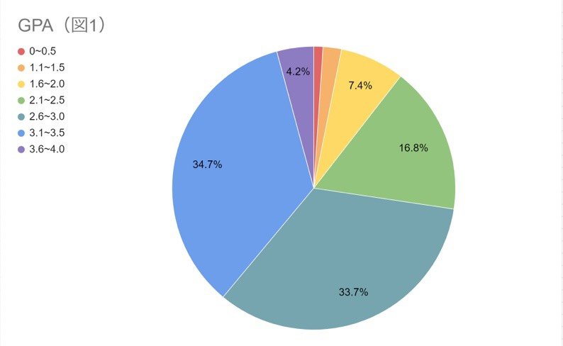
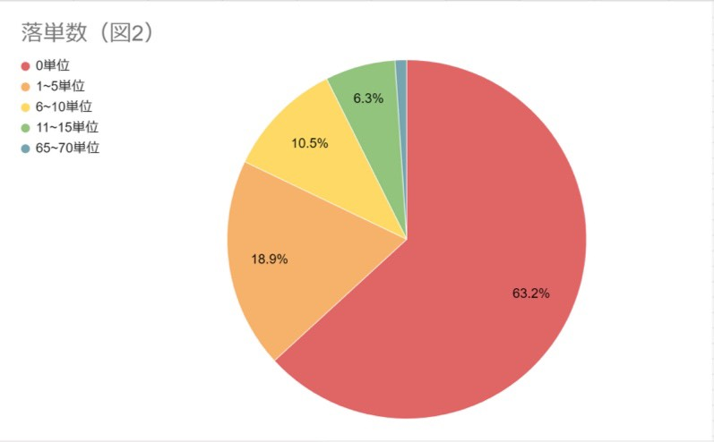
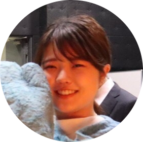
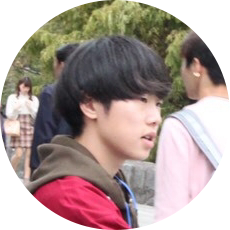

運スタの学力はいかに？！ 成績大調査
みんなの成績の実態は？
みなさん、こんにちは！ 「運スタってなんだか忙しそう…… 勉強との両立について知りたいな」という方のために、今回は運スタの成績事情について掘り下げようと思います！
本題に入る前に新入生の方々のために、大学の成績に関する基礎知識をお伝えしようと思います！
まず、高校までとは大きく異なる点が1つあります。それは必修科目以外の授業を自由に選択できることです！ どの授業をどれほど取るかを自分の思うがままにできます。
また、大学の成績ではGPAという評価方法が用いられます。GPAは高校で言う評定と同じようなもので、0~4の5段階評価で4に近づくほど成績が優秀ということになります。
それでは、基礎知識を学んだところで運スタの成績事情を見てみましょう！ 今回は運スタに所属している在学生95人に調査をしてみました！
まずは通年のGPAについて、95人の平均は【2.77】となりました。（実は筆者が想像していたよりも高い数値で驚きです……） 図1を見てもらえると分かる通り、最も多いのは3.1～3.5の方々です。しかし、2.1～2.5と2.6～3.0の方々に注目すると、この2つでおよそ半数を占めていることが分かります。全体の平均から見ても、やはりこの辺りが一般的な数値となるのでしょう。高いGPAを獲得することは簡単なことではありませんが、努力次第できっと高い数字をとれるので頑張りましょう！
次に落単数（落とした単位の数）についてです。95人の平均落単数は【2.61】となりました。しかし、図2を見てください！ 何か気づくことはありませんか？ そうです、0単位が6割以上を占めています！！ 落単するということは、それだけ後で苦労することを示しています…… だから、「GPAは低くても落単はなんとか回避したい！」という方が多いのです。もちろん意図的に授業を放棄するという方もいますが、なるべく落単しないことをおすすめしておきます(笑)
そして、今回調査をした結果をもとに平均の学部ランキングを作ってみました！ 調査の都合上、早稲田キャンパス・戸山キャンパスの学部のみのランキングとなりますが、ご了承ください。
【平均GPAが高い学部】
- 1位 社会科学部 2.94
- 2位 文学部 2.83
- 2位 教育学部 2.83
なんと、社会科学部がトップとなりました！ そして、2位には文学部・教育学部が並び、僅差で商・法が続く結果となりました。ちなみに今回の調査で、文化構想学部のGPAは個人差が非常に大きいということがわかりました！
【平均落単数が少ない学部】
- 1位 商学部 0
- 2位 文学部 1.58
- 3位 社会科学部 1.77
こちらも意外な顔ぶれとなりました！「まな文学部」とも称される文学部は納得ですが、商学部は勉強にあたって必要とされる数学に苦しむ友人を数多く見てきた身としては意外と感じます。また、高いGPAを誇った社会科学部が落単数という点でも優秀ということがわかりました！
いかがだったでしょうか？ ここまでは統計的なお話でしたが、次に運スタに所属している方の実際の声を聞いてみましょう！
先輩インタビュー！ これで良い成績もとれるはず？
インタビューに答えてくださったのは授業数が多い基幹理工学部で、通年GPA3代後半というとても高い成績の竹内さんです！ 竹内さんはどのような生活をしているのか？ 運スタに興味のあるみなさん、ぜひ参考にしてください！
Q1.授業に運スタと忙しいと思いますが、アルバイトはしていますか？
「大学学内では週3～4日、ワセ飯の店では週1～2日アルバイトしていて、ひと月に10万円くらい稼いでいます！！」
忙しい中でしっかりと収入も得ているようですね！
Q2.授業はどうやって受けていますか？
「しっかりと出席して先生やTAとコミュニケーションをしっかりととっています。提出物も忘れずに！」
先生と仲良くなれば自然と授業の理解も深まるようです。
Q3.課題にはどう取り組んでいますか？
「授業でわからなかったところは友達に聞いて理解しています！ オンライン授業でも友達を作って、レポートもしっかり書けるような理解力を身に着けるのが大事！」
同じ学部の仲間が多いところも運スタの魅力の一つ。授業の理解でも協力していこう！
Q4.運スタとはどのように両立していますか？
「生活習慣を乱さないことが大事です！ 夜更かししすぎず朝しっかり起きれれば時間は十分にあります！ 忙しい直前期でもやることは変わらないので、つらい時こそ学部や運スタの友達と協力し合って頑張ります！」
Q5.最後に今年度の目標をお願いします！
「来季は全部A+を目指します！ そしてチームも楽しいチームにできるように頑張ります！」
ありがとうございました！ もっと質問してみたい方は、運スタに入ってぜひ彼女に質問してみてください！
そしてもうひとり、運スタに熱中するあまり、5年目が確定してしまった砂賀さんにもインタビュー。楽しむあまりこうならないようにしてくださいね(笑)
Q1.時間割はどうしていますか？
「あまりきちんと考えて組みませんでした。友達と一緒に受けるようにはしていました」
履修はきちんと考えて組まないと授業に行かなくなることも！？興味がある授業や、自分の生活習慣に合わせた履修を心がけましょう！
Q2.テスト前はどのような生活をしていましたか？
「勉強は全くせず、変わらない生活をしていました。」
普段あまり授業を受けていないので、あまりテストにも身が入らないようです…...
Q3.成績を見せた時、親はどのような反応をしていましたか？
「『運スタやめたら？』と言われました。なんとかやめずには済みましたが、今年度は頑張らないといよいよまずいです。」
成績が悪くてサークルをやめることになったら元も子もありませんね。
Q4.今年度の目標を聞かせてください！
「フル単！ 局長として早稲田祭を盛り上げます！」
Q5.最後に、新入生に向けてメッセージをお願いします！
「俺みたいにはなるな！ 活動が忙しい人でも成績をきちんととっている先輩はたくさんいます。運スタは自分から主体的に参加していけばとても楽しいサークルです！ ぜひ一緒に楽しもう！」
以上、先輩たちからのインタビューでした。みんなもいい成績と充実した運スタライフの両立を目指しましょう！！
運スタの人の成績は人それぞれ。もっと運スタのことを知りたい人はこちらの交流企画もぜひご利用ください！
新歓イベント情報はこちら